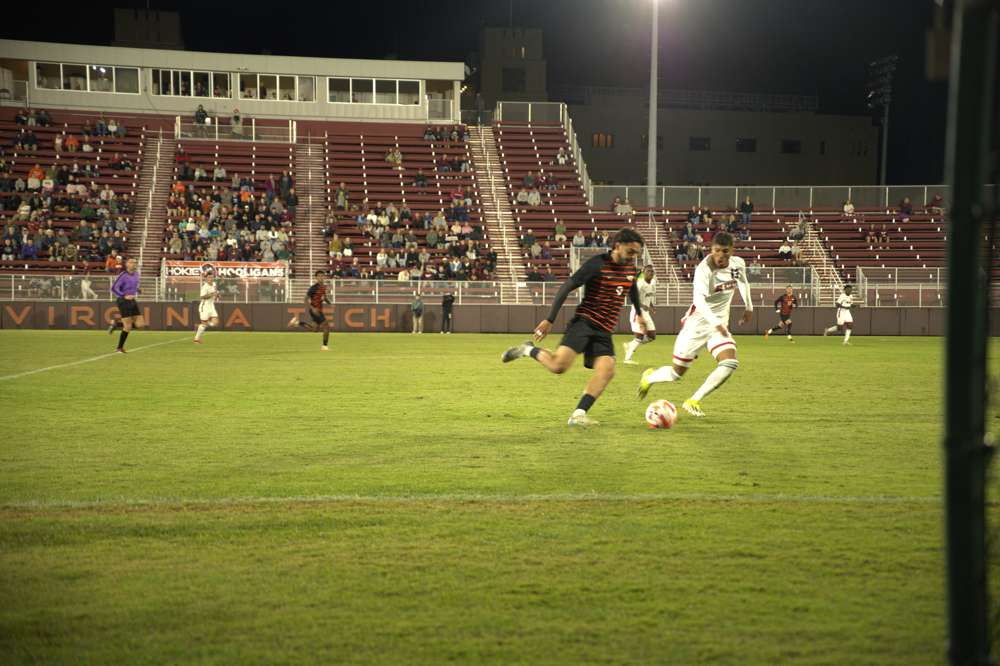
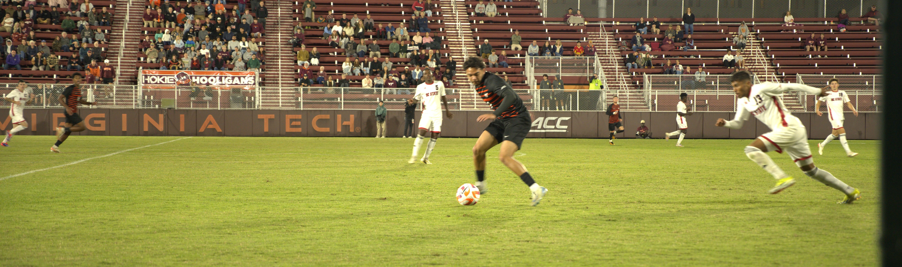

Welcome to my portfolio! I have been doing photography for around six years with the Nikon D3000 and Nikon Z7, along with the occasional use of the Sony a7R III and Hasselblad X1D II.
I enjoy taking photos of sports, architecture, nature, people and even dabble in astrophotography. Some of my fairly diverse work is shown below, but please reach out if you would like to see more of my work.
Gallery
All is quiet on Torgersen BridgeFaint Milky Way on the night sky in ShenandoahNASA's Vehicle Assembly Building from across the Indian RiverChinese goose shaking off the coldMarigold hues after rainFood truck portraitPurple greenhouse glowSunset on lone sunflowerRabbit hiding in plain sightLong-exposure of UVA's Leander McCormick ObservatoryBlack-chinned hummingbird feedingRace for the ball - NC State vs. Virginia Tech 2024 ACC Men's SoccerSnow GooseReferee makes a call - NC State vs. Virginia Tech 2024 ACC Men's Soccer

Onwards - NC State vs. Virginia Tech 2024 ACC Men's Soccer

Defending - NC State vs. Virginia Tech 2024 ACC Men's Soccer